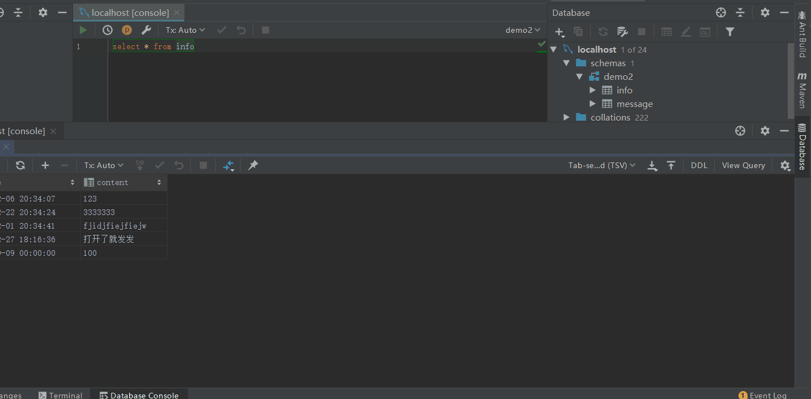

DataBaseJ is a database data processing plugin. Based on DataBase Tools plugin development.
Solutions to related issues encountered in database data processing during daily development.
DataBaseJ是一款数据库数据处理插件。基于DataBase Tools插件开发。
日常开发中数据库数据处理遇到的相关问题解决方案。
暂提供Excel（2003）文件和SQL文件数据导出。
可选择文件导出的位置。
可重命名导出文件的名称（默认位查询到的数据表名称）。
